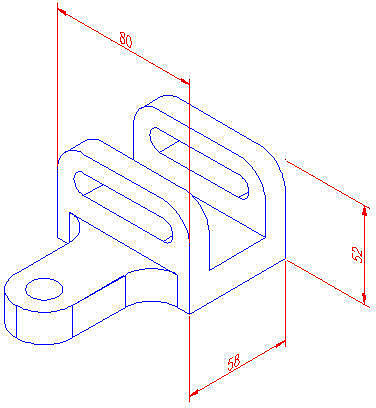
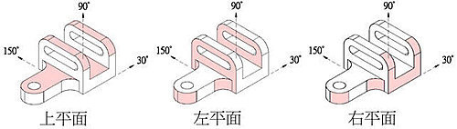
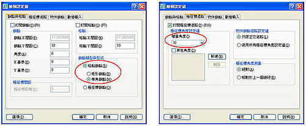
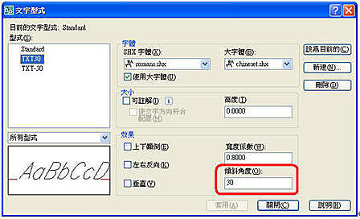
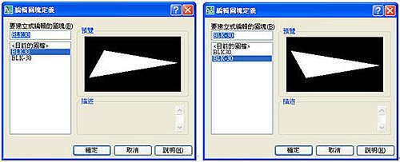
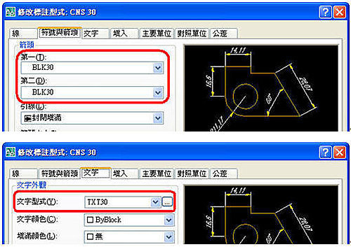

繪製 2D 等角視景概論：
等角圖面沿三條主軸對齊，從特殊檢視點模擬 3D 物件。
透過設定「等角鎖點/格點」，您可以輕鬆地沿三個等角平面中的一個，對齊物件，但是，雖然等角圖面看起來像是 3D 圖面，但它實際上是 2D 表示方式。 因此，您不能期望萃取 3D 距離與區域，從不同的檢視點顯示物件，或自動移除隱藏線。
如果鎖點角度為 0，則等角平面的軸分別為 30 度、90 度及 150 度。 一旦將鎖點型式設定為「等角」，您可以在三個平面中的任意一個中工作，每個平面都具有一對關聯軸：
左。沿 90 度及 150 度軸對齊鎖點與格點。
上。沿 30 度及 150 度軸對齊鎖點與格點。
右。沿 30 度及 90 度軸對齊鎖點與格點。

選擇三個等角平面之一，將導致正交與十字游標沿相應的等角軸對齊。 例如，當「正交」開啟時，您所指定的點會沿著所在的模擬平面對齊。 因此，您可以繪製上平面，切換到左邊的平面繪製另一側，以及切換到右邊的平面完成該圖形。
開啟等角平面的步驟：
1.按一下「工具」功能表 「繪圖設定值」。
2.在「繪圖設定值」對話方塊中，於「鎖點與格點」標籤上的「鎖點類型與型式」下，選取「等角鎖點」。
3.在「繪圖設定值」對話方塊中，於「極座標追蹤」標籤上的「極座標角度設定值」下，設定極座標追蹤的對齊角度為 30。
4.按一下「確定」。

※透過按 F5 鍵或 [Ctrl]+[E]，您可以循環顯示三個等角平面。
也可使用 ISOPLANE 指令，指定目前的等角平面。
當圖面有等角圓時，可使用 ELLIPSE 指令 指定橢圓的軸端點或 [弧(A)/中心點(C)/等角圓(I)]: 輸入選項 等角圓(I)
※「等角圓」選項只有在「鎖點與格點」的「鎖點類型與型式」選項設定為
「等角鎖點」時才可用。
新增文字型式：
「格式」功能表：「文字型式」。指令行: STYLE。
設定文字型式的傾斜角度。 您在「文字型式」對話方塊內選取「新建」之後，螢幕上會顯示「新文字型式」對話方塊。 您可以在這個對話方塊內，定義新文字的名稱。

新增2組文字型式名稱分別為：[TXT30] 及 [TXT-30]
[TXT30] 文字型式：「效果」標籤的傾斜角度為 30 。
[TXT-30] 文字型式：「效果」標籤的傾斜角度為 -30 。
新增使用者定義箭頭圖塊，新增2組箭頭圖塊名稱分別為：[BLK30] 及 [BLK-30] 。

新增標註型式：
「格式」功能表：「標註型式」。指令行: DIMSTYLE。
設定標註型式的性質。 您在「新建標註型式」對話方塊內選取「繼續」之後，螢幕上會顯示「新建標註型式」對話方塊。 您可以在這個對話方塊內，定義新型式的性質。 開始時，對話方塊會顯示您在「新建標註型式」對話方塊內選取來啟動新型式的標註型式的性質。
新增2組標註型式名稱分別為：[CNS 30] 及 [CNS-30] 。「符號與箭頭」標籤的箭頭請選取「使用者箭頭」。 顯示「選取自訂箭頭圖塊」對話方塊。 選取使用者定義的箭頭圖塊的名稱 。 (圖塊必須在圖面中。)

[CNS 30] 標註型式：
「符號與箭頭」標籤的第一個及第二個使用者定義的箭頭圖塊的名稱為 (BLK30) 。
「文字」標籤的文字型式為 TXT30。
[CNS -30] 標註型式：
「符號與箭頭」標籤的第一個及第二個使用者定義的箭頭圖塊的名稱為 (BLK-30) 。
「文字」標籤的文字型式為 TXT-30。